The capstone for Routes Across Town — where the student stops answering one question and builds a whole routed network from scratch, under a budget. Two designs live here. The Seven Bridges is the current proposal: four neighbourhoods on the land masses of Königsberg, a mix of the right boxes, and an Exchange that approves and logs every sale. Branches across town is the first, simpler proposal, kept for reference. Both tabs are mockups for your review — no game code has been touched.
The first proposal (the Branches across town tab) proved the shape: place routers, lay lines around an obstacle, address, set gateways, fill signposts, size the hop count, pay for it. This revision keeps all of that and answers the brief that followed it — the level should make a student choose between machine types (a hub here, a switch there, a router between blocks), spread across four neighbourhoods, on a map with real geography, with a shared endpoint the data has to pass through for analytics.
The map is the Seven Bridges of Königsberg. The river Pregel cut the city into four land masses — two banks and two islands — joined by seven bridges; in 1736 Euler proved you cannot walk the city crossing each bridge exactly once, and modern graph theory was born. Here the four land masses are four neighbourhoods, each its own block; wires may cross water only on a bridge; and — unlike Euler's walk — you do not need all seven. You pick the cheapest set of crossings that connects every neighbourhood to the heart of the city.
Four neighbourhoods (one terminal each) · a mix of machine types the student must choose correctly (router / switch / hub) · a water-and-bridges geography where crossings are the scarce resource · and two destinations every sale must reach — the card-auth HQ on the central island, and the analytics logger across the water in the far corner of the north bank.
The screenshots below are of the live level, not a mockup. Building it clarified three things, all noted at the relevant step:
· The analytics logger moved to the north bank (Sam's call), so it is a second destination block — the routers now need signposts to two neighbourhoods, and the north bank, with the register and the logger, needs its own switch. There are two switched segments, not one.
· Addressing and gateways are derived by the engine from the student's wiring in this first version — so the student's decisions are the boxes, the cables, the forwarding tables and the hop count. Student-set per-interface addressing (shown as a design idea further down) is the next deepening, not yet shipped.
· The hub-vs-switch choice is enforced by a "runs clean — no collisions" goal rather than a popover: a hub on a busy segment collides and fails the run (with a diagnosis that names it), while an all-switch build runs clean.
The level opens with the four land masses drawn and the four neighbourhoods' endpoints glowing, each asking for its part of the setup. The north bank and south bank run top and bottom; Kneiphof, the central island, is the Exchange; Lomse is the east island. Between them is water, and the only way across is one of the seven bridges — Krämer, Schmiede, Grüne, Köttel, Honig, Holz and Hohe, each drawn where the real one stood.
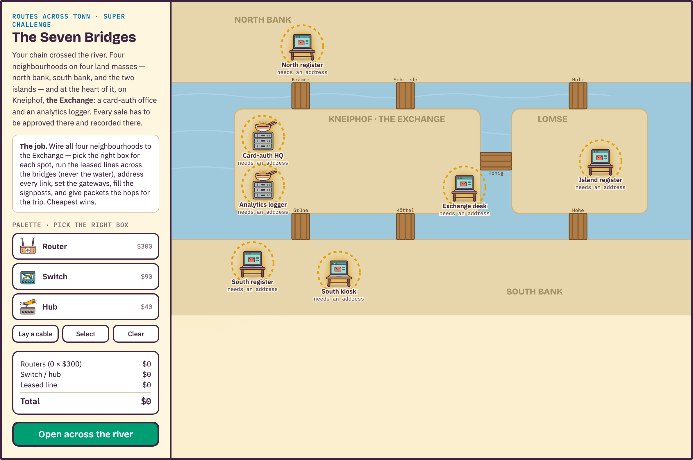
Since there are seven bridges, no route exists that crosses each exactly once — the result Euler proved for Königsberg, and the start of graph theory.
After L. Euler, Solutio problematis ad geometriam situs pertinentis (1736). Historical note, used for the setting.The Euler story is the hook, not the task. The task is a connectivity-and-cost one: of the seven possible crossings, wire the cheapest few that still join every neighbourhood to the Exchange — and the duplicated bridges (two to each bank) give a genuine cheap-vs-dear choice, while a redundant one makes a loop the hop count has to guard.
This is the new heart of the level. The palette now offers three boxes, and the student has to put the right one in each place — the same judgement a real installer makes.
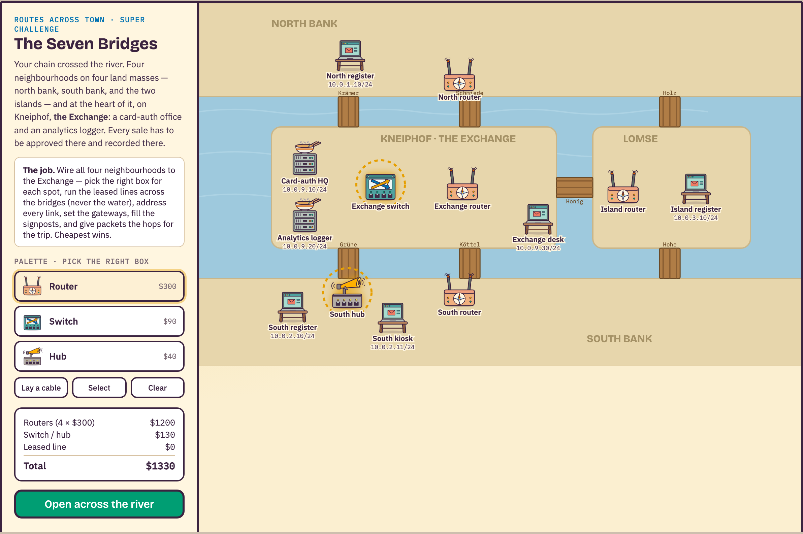
| Spot | Right box | Why |
|---|---|---|
| Between two neighbourhoods (across a bridge) | Router · $300 | Only a router forwards between IP blocks. A switch or hub can't leave the block. |
| A segment where several machines answer — the Exchange (HQ + desk) and the north bank (register + logger) | Switch · $90 | A switch forwards each reply out only its own port, so concurrent answers don't collide. |
| A single host to its router (the south and island registers) | No box · $0 | One cable does it; buying gear here just wastes money. |
| A busy segment, done cheap | Hub · $40 — the trap | A hub repeats to every port, so concurrent replies collide and the run fails to run clean. $50 cheaper, and wrong. |
The switch-vs-hub choice is a real decision, grounded in the same textbook the block zone already quotes:
A hub is thus a physical layer relay that receives an electrical signal on one of its interfaces, regenerates the signal and transmits it over all its other interfaces.
Computer Networking: Principles, Protocols and Practice, 3rd ed. — O. Bonaventure et al., protocols/lan.html. CC BY-SA 3.0.An Ethernet switch understands the format of the Ethernet frames and can selectively forward frames over each interface.
protocols/lan.html. CC BY-SA 3.0.The shipped level enforces this with a goal: every busy segment runs clean — no collisions. Drop a $40 hub at a segment where several machines answer at once, and their replies collide; the run delivers everything but fails the no-collisions goal, so it scores zero stars even though it was cheaper. That's the point — the cheap wrong box can't win. The diagnosis names the hub and says what to do.
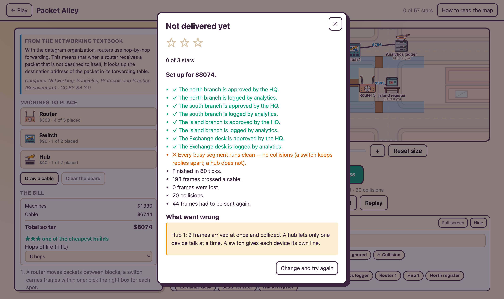
Leased line is clicked box-to-box and priced as it lands, exactly as in the restaurant — but here a cable is refused if its straight run would cross open water. The only way over the Pregel is a bridge, so every inter-neighbourhood line has to aim through one. Machines, likewise, can't be dropped on water.
This is the seg_hits_rect rule from the restaurant's kitchen, generalised: the obstacle is now the water, and the bridges are gaps in it a cable may pass through. The Königsberg geometry makes the trade concrete — a duplicated bridge may be shorter but lands you at a router with a longer onward path, so cheapest-line is not always cheapest-network.
With the boxes placed and the bridges crossed, the student's remaining decisions are the forwarding tables and the hop count — the two network-layer ideas this zone is about. The addresses the tables refer to are derived by the engine from the wiring, so the student points at roads, not octets.
derived from the wiring — no typing
From the cables alone, the engine gives every router interface an address on its block (a /24 toward a neighbourhood, a point-to-point /30 across a bridge) and every host a gateway — the router on its own block. The inspector shows what each machine got, so the table rows are readable.
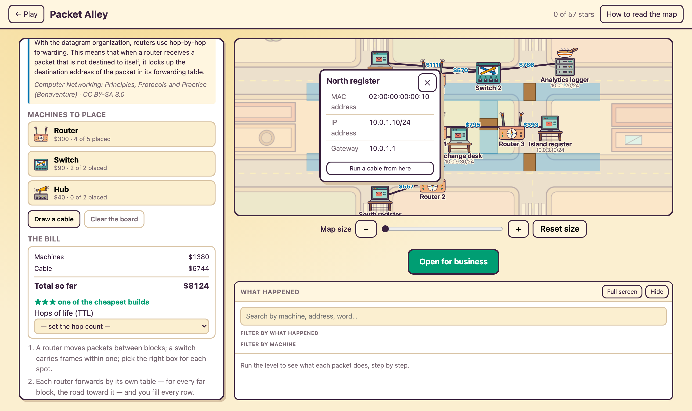
action: click a router, choose the road for each far block
This is the heart of the level — the routed twin of the restaurant's switch table. Connected blocks need no entry; for every far block, the student picks the neighbouring router that leads there. A wrong signpost sends the packet to a router that can't deliver it — a black hole; a missing one strands it at the first router.
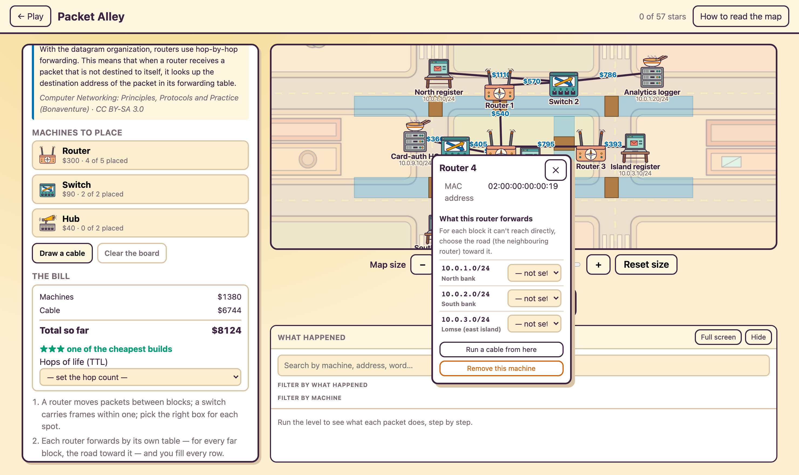
action: set the hop count (TTL)
The hop count must clear the longest crossing — three routers, from a bank to the analytics logger on the far side. Leave it at the low default and the packet expires mid-river, however perfect the tables. It's the TTL dial, as a single choice.
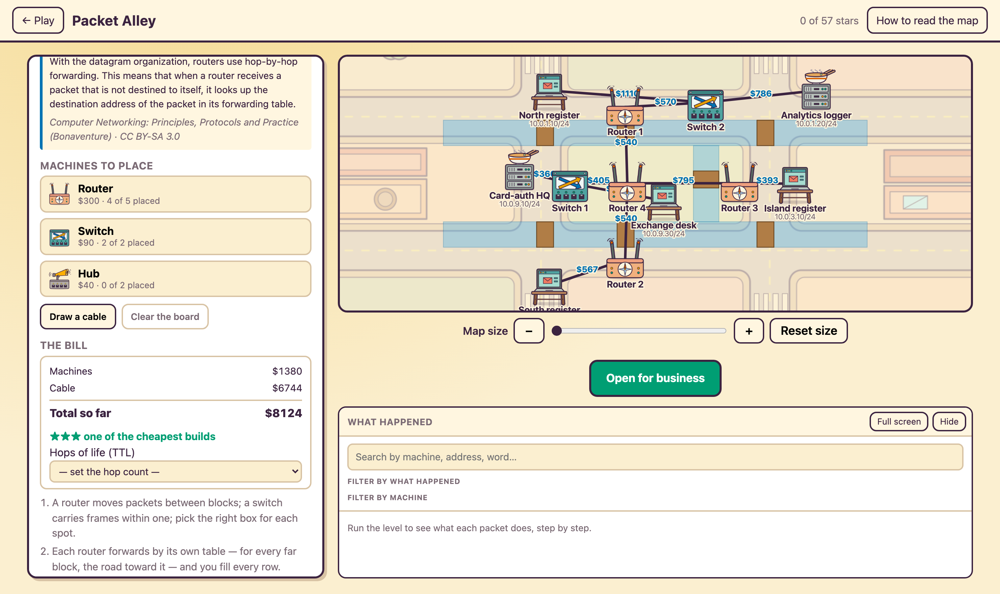
With the datagram organization, routers use hop-by-hop forwarding. … it looks up the destination address of the packet in its forwarding table.
principles/network.html — the signpost mechanic. CC BY-SA 3.0.A black hole is a router that receives packets … but does not have an entry inside its forwarding table for this destination.
principles/network.html — the wrong-signpost failure. CC BY-SA 3.0.Consider a path that contains a cycle. … the packet is discarded when it reaches zero.
principles/network.html — TTL and loops. CC BY-SA 3.0.Two machines have to be reached from every branch: the card-auth HQ, on Kneiphof with the Exchange desk behind a switch, and the analytics logger, across the water in the far corner of the north bank with the north register behind a second switch. Every sale has to be approved at the HQ and recorded at the logger — so the routers need signposts to both blocks, and both two-host segments need a switch. Miss either destination, or collide on a hub, and the run fails.
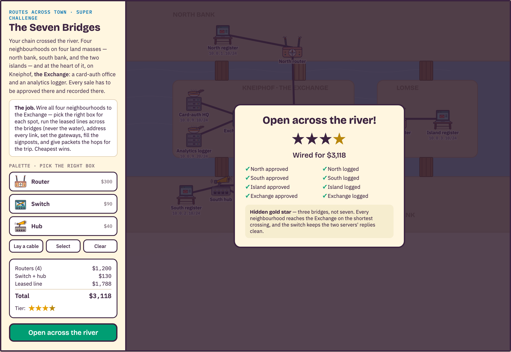
The analytics endpoint is the "data must be recorded for analytics" idea from the brief, modelled honestly within the engine's grammar: a second required destination rather than a magic tap. Moving it to the north bank (Sam's call) made it a second block to route to, which is what gives the forwarding tables two neighbourhoods to point at and the north bank its own switch. A later variation could put the logger on the path, so a missed hop drops the record.
device choice · new Router between blocks, switch where many talk, hub where one does, nothing where a cable suffices. The link-layer lesson, now a cost-and-judgement call. Grounded in protocols/lan.html.
topology · cost · Euler Seven crossings, three needed; duplicated bridges give a cheap-vs-dear pick, a redundant one a loop. Wires can't cross open water.
subnet addressing A /24 to a neighbourhood, a /30 across a bridge; off-block traps in every list.
gateways A host hands off-block traffic to a router on its own block. network.html / glossary.
hop-by-hop forwarding · black holes Fill every router's table; a wrong signpost strands the packet. "looks up the destination … in its forwarding table."
TTL Enough hops to cross the city; the safety net on a redundant crossing. "discarded when it reaches zero."
the Exchange · new Two required destinations on the central island — routing to that block has to be complete, and the switch has to keep the replies apart.
Same bones — pick the boxes, buy the bridges, address, gateway, signpost, size the TTL, pay for it — three different crossings of Königsberg, each leaning on a different corner of the zone.
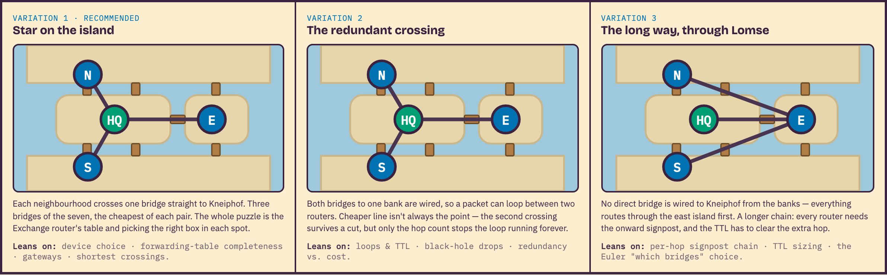
| Variation | The puzzle | Leans hardest on |
|---|---|---|
| 1 · Star on the island | Each neighbourhood crosses one bridge straight to Kneiphof — three of the seven, the cheaper of each pair. The whole puzzle is the Exchange router's table and the right box in each spot. | Device choice · forwarding-table completeness · gateways · shortest crossings. |
| 2 · The redundant crossing | Both bridges to a bank are wired, so a packet can loop between two routers. The second crossing survives a cut, but only the hop count stops the loop running forever. | Loops & TTL · black-hole drops · redundancy vs. cost. |
| 3 · The long way, through Lomse | No bank has a direct bridge to Kneiphof — everything routes through the east island first. A longer chain: every router needs the onward signpost and the TTL has to clear the extra hop. | Per-hop signpost chain · TTL sizing · the Euler "which bridges" choice. |
Ship Variation 1 (Star on the island) as the zone's super card — it's the cleanest first "build the whole routed network," with the device-choice and forwarding-table lessons front and centre. Keep 2 and 3 as deeper re-runs the engine supports for free. The walkthrough above uses Variation 1.
This still extends the restaurant's build mode rather than inventing a new simulation — the core owns every decision and number; the page only draws. On top of what the first proposal listed (routers in the palette, per-interface addressing, hand-set router tables, gateway and TTL as build edits), the Seven Bridges adds:
roads level's two pings).Open questions for you:
Same discipline as the restaurant: a behaviour suite plus a hand-rolled permutation/property suite, each new rule broken once and the failure logged in SECOND-ORDER.md. Planned coverage adds, over v1's list:
You asked whether some build-UI designs bug out more than others. I'd run it as a headless harness that drives two interaction variants — say, "arm-then-click placement" vs. "drag-from-palette," or "point-at-neighbour" vs. "dropdown" for tables — through the same deterministic random edit sequences across the three engines, and compare how often each wedges, mis-places, or desyncs from the core. Because the core is the single source of truth, "correct" is unambiguous, so the comparison is just failure-rate per variant. I can fold that into the build-phase test plan once we pick a design to build first.
Before designing the next one, it's worth being precise about what the first one does — its constraints and the knowledge it makes a student demonstrate — so the town level deepens the same idea rather than repeating it.
The block zone teaches one network: hosts and a switch, frames carried by MAC address, a switch that learns. Its super level — Your own restaurant — hands the student an empty floor with three registers, a card-auth server, a reel of cable, and a kitchen in the middle. Everything the student does lives inside that single block.
| Constraint | What it forces |
|---|---|
| A reel limit (max cable per run) | No single sprawling cable; placement has to be compact. |
| Cable priced per unit length | Every run is a cost decision; the bill is the score. |
| Switches cost money, endpoints are free | You buy as few switches as the geometry allows. |
| No cable may cross the kitchen | Routing around an obstacle, not through it. |
| Kitchen sized so one switch can't reach all four | At least two switches — a real topology choice, proven by a sweep test. |
Place → wire → address → fill the tables → run, under a budget, around an obstacle, graded on the cost distribution. That is the super-level grammar. The town level keeps every verb and raises what each one means — from one block and one switch to many blocks and routers that forward by hand-set signposts.
The town zone (Routes Across Town) is where packets leave their own block. Its levels already teach, one idea at a time: a gateway on your own block, a router that forwards by a table, directly-connected blocks that need no entry, dead ends when a signpost is wrong, and a hop count that kills loops. The super level has to make a student do all of them at once, on a network they built. The three ideas most specific to it are grounded in the open textbook the game already cites:
With the datagram organization, routers use hop-by-hop forwarding. This means that when a router receives a packet that is not destined to itself, it looks up the destination address of the packet in its forwarding table.
Computer Networking: Principles, Protocols and Practice, 3rd ed. — O. Bonaventure et al., principles/network.html. CC BY-SA 3.0.This is the forwarding-table mechanic: at every router the student fills, a packet's destination block is looked up and sent on. Get the lookup right and it advances; leave it blank and it stops.
A path may lead to a black hole. In a network, a black hole is a router that receives packets for at least one given source/destination pair but does not have an entry inside its forwarding table for this destination.
principles/network.html. CC BY-SA 3.0.This is the failure the student has to avoid: a missing or wrong signpost sends a packet to a router that can't deliver it, and there the journey ends. The diagnosis on a failed run names it in exactly these terms.
A second type of problem may exist in networks using the datagram organization. Consider a path that contains a cycle. … [the hop count] is decremented … and the packet is discarded when it reaches zero.
principles/network.html. CC BY-SA 3.0.This is TTL: on a long route or a wiring that loops, the hop count is the safety net. The student has to give packets enough hops to cross the town — and sees why a loop can't run forever.
Gateways and subnet addressing lean on the same chapter and the glossary, and are already taught verbatim-sourced in the town levels gateway, point and roads: a device reaches its own block directly, and for anywhere else hands the packet to a gateway that must sit on its own block.
The restaurant became a small chain. Three branch registers sit in three districts — each its own block — and a downtown HQ server approves every card. The roads between the districts are the student's to lay. A rail yard cuts through the middle of the map; leased lines can't cross it, so the junctions have to sit where the roads can route around — the direct echo of the kitchen, one layer up.
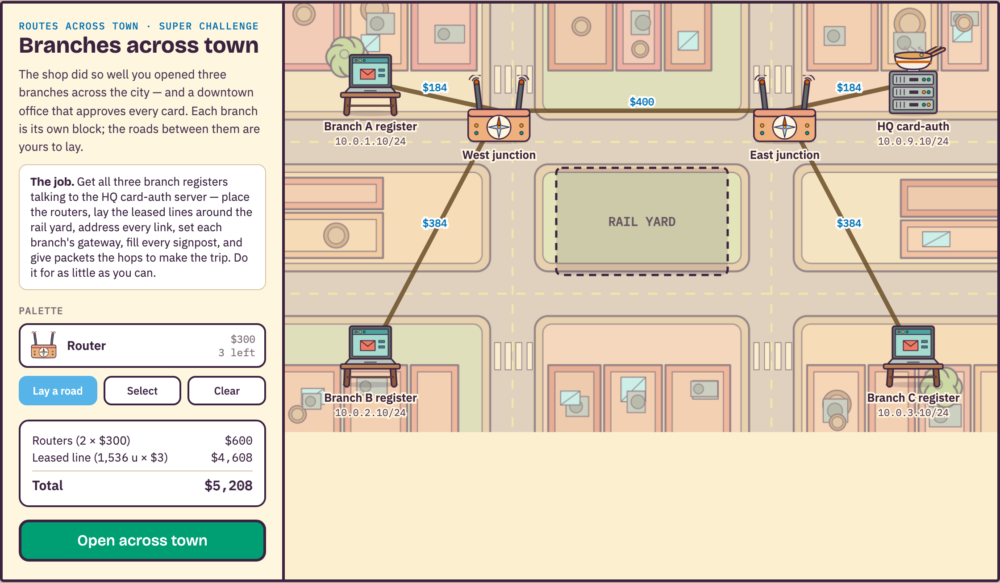
given: three branches on three blocks, an HQ on a fourth, a rail yard between
The map opens with only the four endpoints, each glowing and asking for its part of the setup. Branch A is on 10.0.1.0/24, Branch B on 10.0.2.0/24, Branch C on 10.0.3.0/24, and HQ downtown on 10.0.9.0/24. Nothing connects them yet.
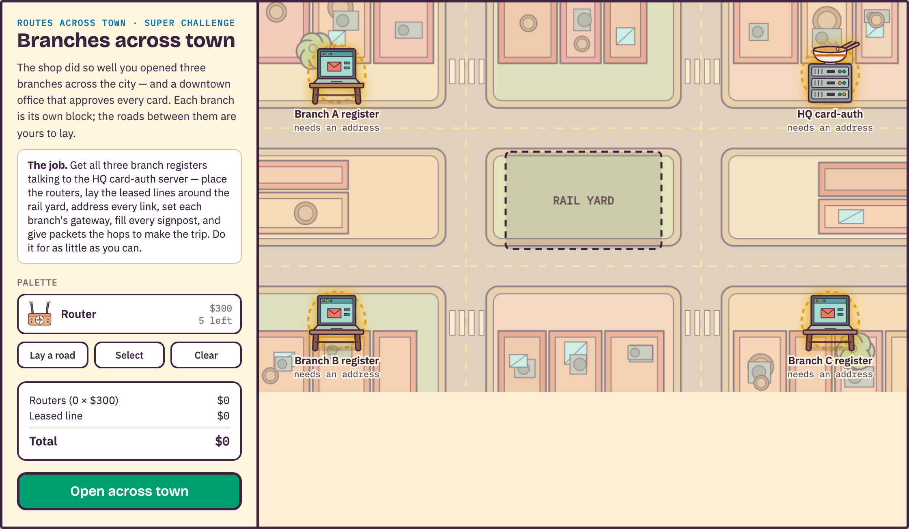
action: pick Router from the palette, click a spot
A router costs $300 — the one piece of gear you buy, and the thing a block needs to talk to any other block. Because leased line can't cross the rail yard, there's no single spot that reaches all four branches; the planning is where to put the junctions so the roads route around. The canonical cheap answer is two, one serving each pair of branches, joined along the top.
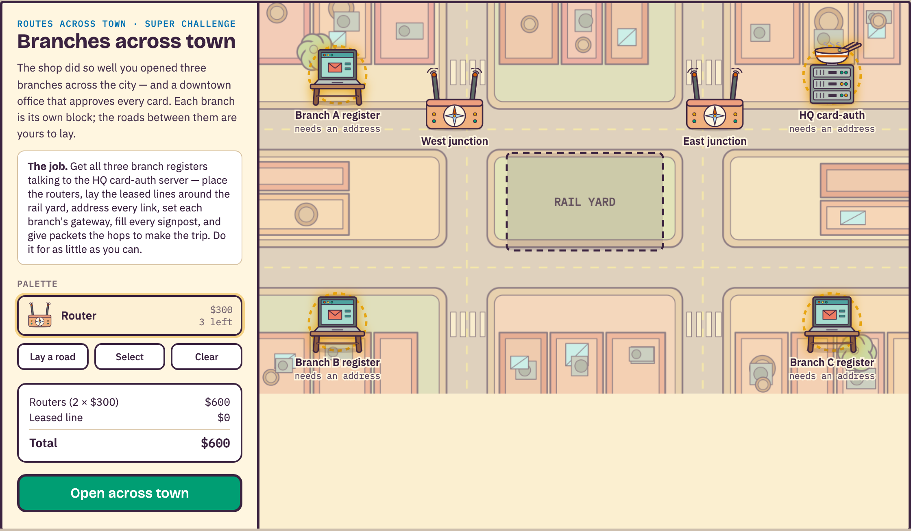
action: turn on Lay a road, click two devices
Each line is clicked device-to-device and priced the instant it lands. A line over the reel limit, or one whose straight run would cross the rail yard, is refused — so every road goes around. Leased line is dear ($3 a unit), so the shape of the network is most of the bill.
action: click a router, give each of its links an address
This is the new depth over the restaurant. A router sits on several blocks at once; each of its links needs an address on that link's block. The branch links take the branch's /24; the road between junctions is a point-to-point /30. The list for each link mixes valid choices with deliberate traps on the wrong block — the subnet lesson, made concrete at every interface.
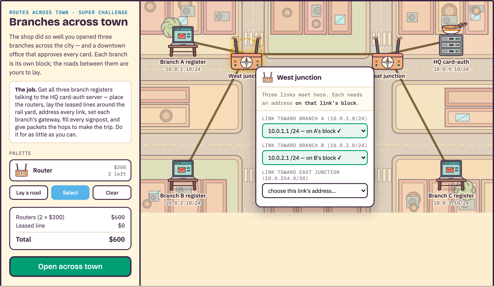
action: click a register, choose its way off the block
A register can reach its own block directly, but HQ is somewhere else — so it needs a gateway, and the gateway has to be an address it can already reach: the junction's near side, on its own block. The HQ's router address and the other branch's block are offered as traps.
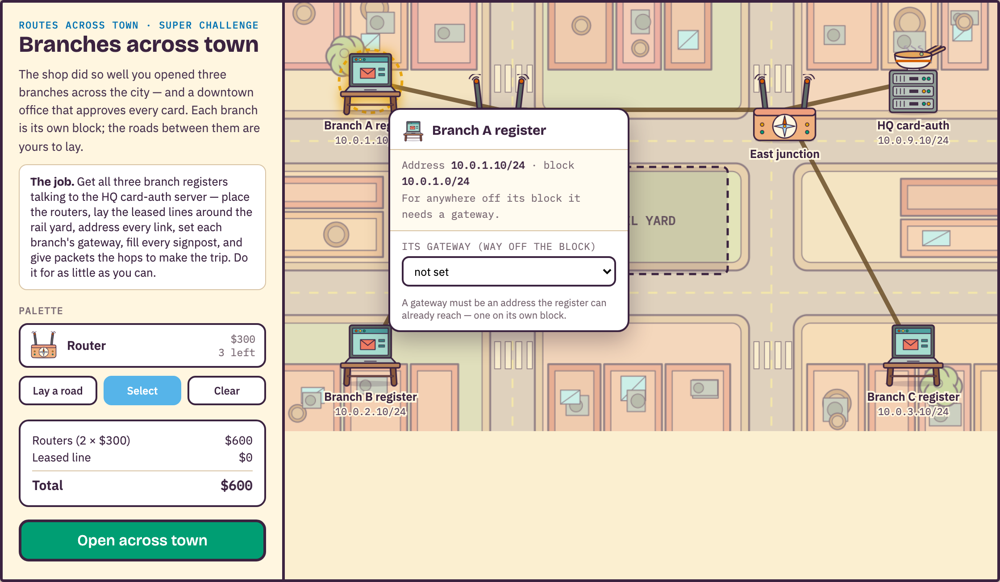
action: click a router, choose the road for each far block
The heart of the zone. Each router already knows the blocks it is wired to — those are directly connected and need no entry (shown greyed, with the lesson stated). For every block it can't see directly, the student picks the road that leads there: "to reach HQ, send toward East junction." Point a block down the wrong road and the packet hits a router that can't deliver it — a black hole. Leave a row blank and it stops at the first junction.
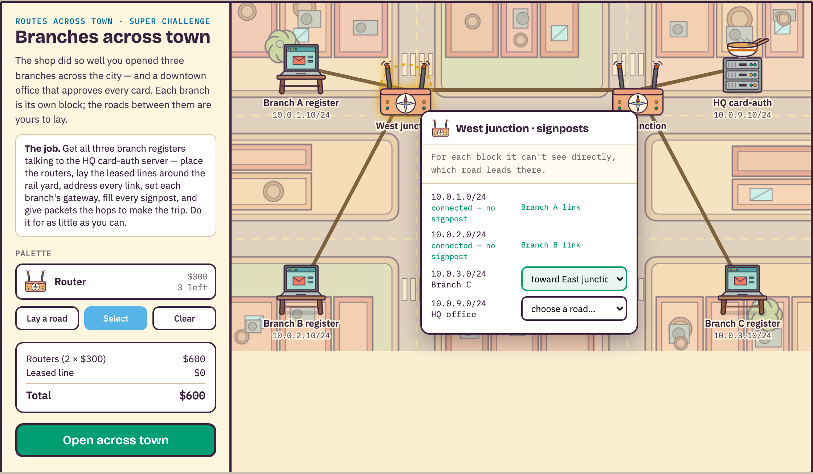
action: set the hop count (TTL) for the longest route
Even with every signpost right, a packet dies in transit if it runs out of hops. The longest trip here crosses two junctions; a hop count of two expires before the far side. The student sizes the TTL to the route — and, in the variations that allow a loop, sees the hop count stop a cycle from running forever.
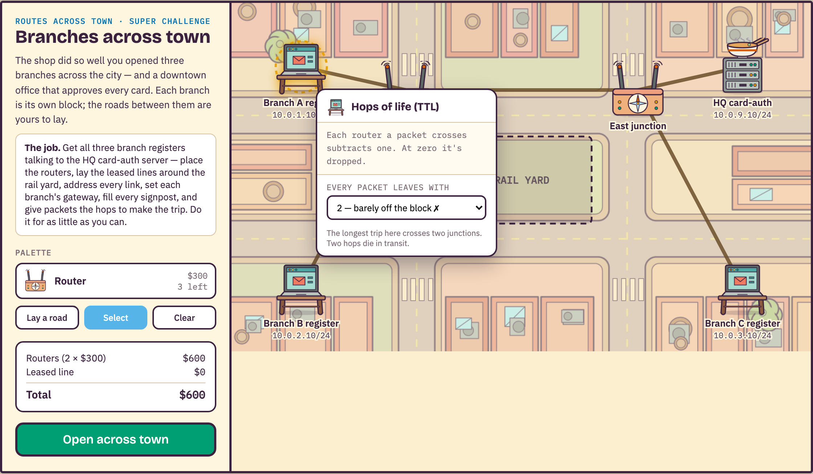
action: run it on the real engine, watch the packets cross the city
Each branch sends a card-auth request to HQ and waits for the approval. The same deterministic engine that runs every other level carries them, hop by hop, in the searchable log. If all three branches get their replies, the franchise is online — and the cheaper the network, the more stars.
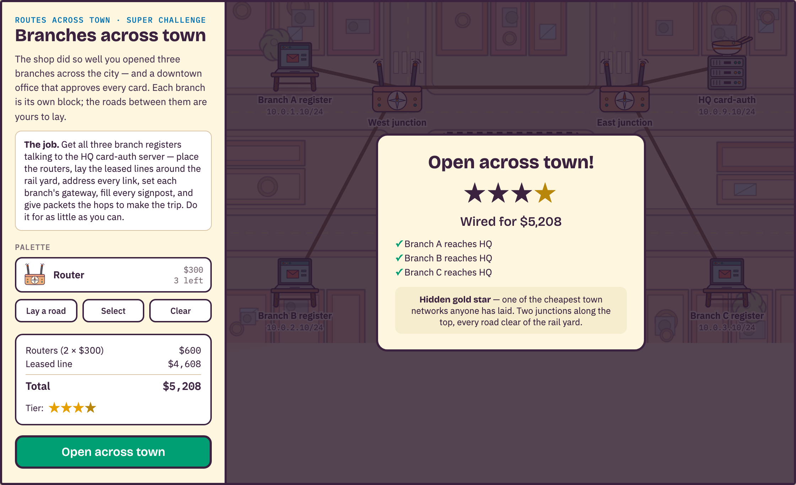
Leave a junction without a signpost for HQ's block and the run fails with the textbook's own term — a black hole — and the exact block and router at fault, with the step log filtered to just the dropped packets. The student learns the table matters by watching it not matter.
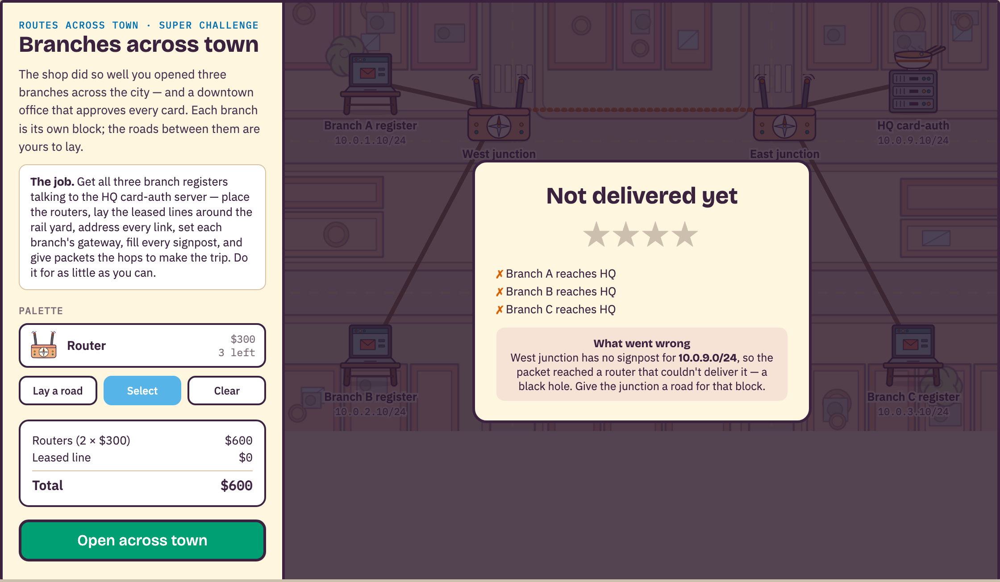
topology + cost Leased line can't cross the rail yard and routers cost real money, so the student trades a tidy two-junction layout against a sprawling detour. Mirrors the restaurant's two-switch kitchen puzzle one layer up.
subnet addressing A router lives on several blocks; each interface must be on its link's block (a /24 to a branch, a /30 between junctions). Off-block traps make the subnet rule bite. Grounded in the town addressing levels (gateway, point).
gateways A host reaches its own block directly and hands everything else to a gateway on that block. The far router and a neighbour's block are offered as traps. Grounded in network.html / glossary.
hop-by-hop forwarding The student fills every router's table: a signpost per remote block, none for connected ones. "routers use hop-by-hop forwarding … looks up the destination address … in its forwarding table."
black holes A wrong or missing signpost strands the packet at a router with no entry; the failure is diagnosed by name. "a black hole is a router that … does not have an entry … for this destination."
TTL & loops The hop count has to clear the longest route, and it's what stops a looped wiring from running forever. "Consider a path that contains a cycle … the packet is discarded when it reaches zero."
Passing is simple: all three branches get their approvals back. The stars are about money — routers plus leased line — and, exactly as in the restaurant, they're set against the distribution of every network a student could reasonably build, not a hand-picked number. The method is the one already shipped: sample many valid builds, price each through the engine's own cost, and read the percentiles off that distribution.
| Stars | Among all buildable town networks | Illustrative total* |
|---|---|---|
| ★ | it delivers at all | any passing build |
| ★★ | cheapest two-thirds (≤ 66th percentile) | to be sampled |
| ★★★ | cheapest third (≤ 33rd percentile) | to be sampled |
| ★★★★ gold | cheapest ~5% (≤ 5th percentile) — hidden | ≈ $5,208 (two junctions, top route) |
Same bones — place routers, lay roads, address links, set gateways, fill signposts, size the TTL, pay for it — three different towns, each leaning on a different corner of the zone. They give you a choice of difficulty curve and let the level be re-run without being the same puzzle twice.
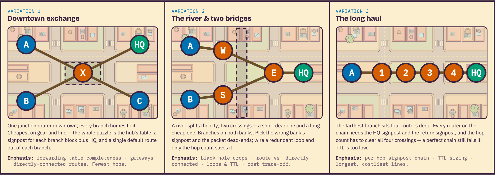
| Variation | The puzzle | Leans hardest on |
|---|---|---|
| 1 · Downtown exchange | One junction router downtown; every branch homes to it in a star. Cheapest on gear and line — the whole puzzle is the hub's table (a signpost per branch block plus HQ) and a single default route out of each branch. | Forwarding-table completeness · gateways · directly-connected routes. Fewest hops, so a modest TTL. |
| 2 · The river & two bridges | A river splits the city with two crossings — a short dear bridge and a long cheap detour — and branches on both banks. The wrong bank's signpost dead-ends a packet; a redundant loop is possible, and only the hop count saves it. | Black-hole drops · route vs. directly-connected · loops & TTL · a real cost trade-off. |
| 3 · The long haul | The farthest branch sits four routers deep in a line. Every router on the chain needs the HQ signpost and the return signpost, and the TTL has to clear all four crossings — a perfect chain still fails if the hop count is too low (the across lesson, built from scratch). |
Per-hop signpost chain · TTL sizing · the longest, costliest lines. |
Ship Variation 1 (Downtown exchange) as the zone's default super level — it is the cleanest first encounter with "build the whole forwarding plan," closest in spirit to the restaurant, and the hub's table is a satisfying single focus. Keep 2 and 3 as the deeper re-runs the engine supports for free, since they're the same mechanic on a different map. The walkthrough above uses the two-junction form because it shows the richest single table; a hub-and-spoke is a strict simplification of it.
The restaurant super level added a build mode to the I/O-free core: a build block, a student-held build state, and an assembled() step that turns the student's placement into a concrete level the existing simulation runs. The town level extends that mode rather than inventing a new one. The new pieces, in the same spirit (core owns every decision and number; the page only draws):
router with its per-link interfaces as a placeable, the way the restaurant placed static switches.set_addr to an interface target.assembled() to a route whose next hop is the chosen neighbour's interface.Open questions I'd like your read on before building:
/30 between junctions) is the fullest lesson but the most clicks. An alternative: fix the point-to-point links and have the student address only the branch-facing interfaces. I lean toward the fuller version with good traps, but it's a load question for a classroom.The same way the restaurant's do — a behaviour suite plus a hand-rolled permutation/property suite, each new rule break-tested once and the failure recorded in SECOND-ORDER.md. Planned coverage:
The Seven Bridges used to play over the town zone's street-grid backdrop — a modern block of streets that didn't mesh with a river running through it. Sam asked to base the scenery on a real historical map of Königsberg and recreate that art style, so the whole scene looks like one old engraving. This is now built and deployed; the restaurant super level got a matching antique floor plan too. The study below records the sources and the mockups; the live result is at the end.
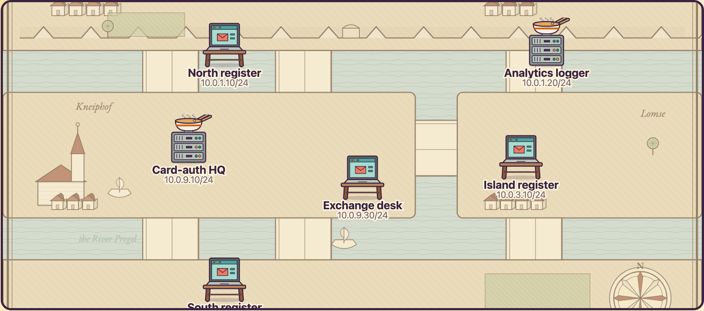
Königsberg (now Kaliningrad) was engraved many times in the age of the great city atlases. Three are the obvious references for the art style, and all are long in the public domain:
| Source | What it gives the style |
|---|---|
| Braun & Hogenberg, Civitates Orbis Terrarum (1582) — the Königsberg / Kaliningrad plate | The classic oblique bird's-eye view: little gabled houses in rows, the Pregel splitting the town, hatched water, a decorative cartouche and figures. Kneiphof and the river are already the subject. |
| Merian-Erben (1652) — the Königsberg plan | A tighter city plan of the same view a lifetime later: the fortified walls, the bridges across the centre, the cathedral on the island. (Referenced in the TCD graph-theory notes.) |
| Euler's figure (1736) — from the paper that founded graph theory | The schematic the whole level rests on: four land areas, seven bridges, the branches of the Pregel. Seven Bridges of Königsberg. |
The shared idiom: aged parchment, sepia copperplate line-work, oblique 3-D buildings with hatched shading, water drawn as fine wavy engraved lines, a title cartouche, a compass rose and a ruled border. I recreated that in vector art, with the geography laid out to match the game's river exactly.
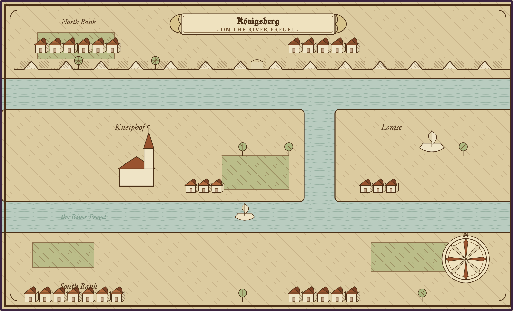
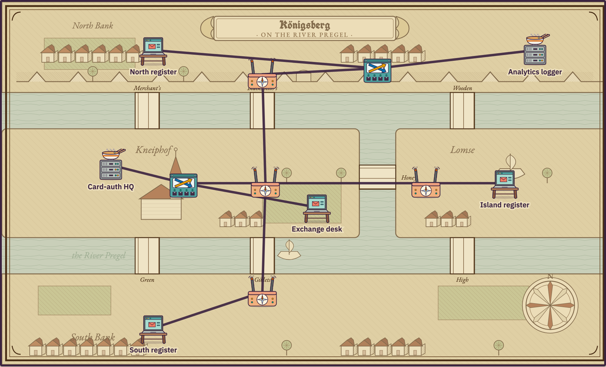
The barrier in this level is water, and the crossings are bridges. An old river-city map is built around exactly those two things, so the backdrop now explains the rules instead of fighting them — and it ties the whole level to Euler's Königsberg, which is where the lesson comes from.
The engraving is now the backdrop for the Seven Bridges, rendered to web/art/backdrops/koenigsberg.png. A new per-level backdrop field overrides the chapter's, so only this level uses the map; a terrain_bg flag tells the page the backdrop supplies the river and bridges, so the SVG stops painting them over it and only the invisible collision shapes (enforced by the core) remain. The bridge-name labels were left out of the picture to keep the playfield clear — the bridges read as planks, and a refused cable names the water.
The restaurant super level (super #1) got a matching treatment: an antique floor plan of the shop, noodle-shop.png — the kitchen drawn as a room with a stove, a Counting Room for the card-auth server, Front / Patio / Bar service counters, dining tables, a title cartouche and a compass. The game still draws its dashed KITCHEN box on top to mark the no-cable zone.
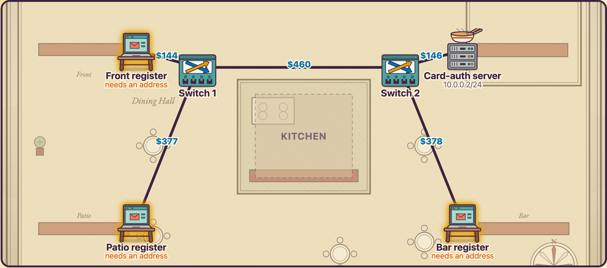
Before shipping, I played the Seven Bridges hard, looking for spots that would block or confuse a student. The fixes that came out of it: the bridge gaps were widened (a straight cable has to thread a gap, and the old 40-unit gaps left only a 46-unit placement window — now ~94, about one icon); wiring two machines on one block straight to a router is now a clear "put them on a switch" refusal instead of a silent misdelivery; and the cross-water, place-on-water and hop-count messages were rewritten to name the water, the bridge and the hops instead of the restaurant's kitchen. All verified live across the three browsers.